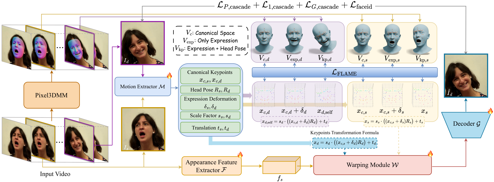

Abstract
This paper primarily investigates the task of expression-only portrait video performance editing based on a driving video, which plays a crucial role in animation and film industries. Most existing research mainly focuses on portrait animation, which aims to animate a static portrait image according to the facial motion from the driving video. As a consequence, it remains challenging for them to disentangle the facial expression from head pose rotation and thus lack the ability to edit facial expression independently. In this paper, we propose PerformRecast, a versatile expression-only video editing method which is dedicated to recast the performance in existing film and animation. The key insight of our method comes from the characteristics of 3D Morphable Face Model (3DMM), which models the face identity, facial expression and head pose of 3D face mesh with separate parameters. Therefore, we improve the keypoints transformation formula in previous methods to make it more consistent with 3DMM model, which achieves a better disentanglement and provides users with much more fine-grained control. Furthermore, to avoid the misalignment around the boundary of face in generated results, we decouple the facial and non-facial regions of input portrait images and pre-train a teacher model to provide separate supervision for them. Extensive experiments show that our method produces high-quality results which are more faithful to the driving video, outperforming existing methods in both controllability and efficiency.
Method

Expression-only Video Performance Editing
Visual Comparisons

Replacement
Enhancement
3D Animation
Portrait Animation
Self-reenactment

Cross-reenactment

BibTeX
@misc{liang2026performrecast,
title={PerformRecast: Expression and Head Pose Disentanglement for Portrait Video Editing},
author={Jiadong Liang and Bojun Xiong and Jie Tian and Hua Li and Xiao Long and Yong Zheng and Huan Fu},
year={2026},
eprint={2603.19731},
archivePrefix={arXiv},
primaryClass={cs.CV},
url={https://arxiv.org/abs/2603.19731},
}